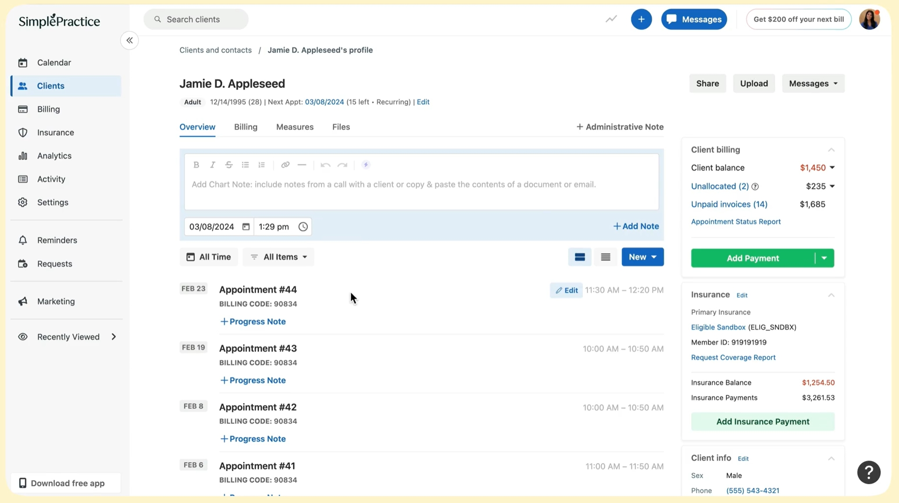

Introduction
The mental health sector has seen unprecedented growth and transformation in recent years, driving the need for more sophisticated, specialized EHR systems. As practices expand and patient needs evolve, many providers are finding that traditional EHR solutions fall short in several critical areas:
- Specialized Documentation: Generic EHRs often lack mental health-specific templates and assessment tools.
- Patient Engagement: Limited capabilities for remote monitoring and between-session support.
- Outcome Tracking: Insufficient tools for measuring therapeutic progress and outcomes.
- Regulatory Compliance: Challenges keeping up with evolving mental health privacy and documentation requirements.
As we move through 2025, mental health providers need EHR systems specifically designed to address these challenges while improving operational efficiency and patient care.
60 Second Summary
Mental Health EHR Challenges: Generic documentation templates, limited patient engagement tools, inadequate outcome measurement capabilities, and complex compliance management have created frustration among mental health providers.
Key Features to Look For:
- Mental health-specific documentation templates and assessment tools
- Integrated telehealth with specialized features for therapeutic sessions
- Robust outcome measurement and progress tracking
- AI-powered documentation assistance
- Seamless insurance verification and billing specific to mental health codes
- HIPAA and mental health-specific regulatory compliance tools
- Patient engagement features between sessions
Top 5 Mental Health EHRs Highlighted:
- OmniPractice.ai: AI-powered documentation, specialized mental health templates, smart insurance verification, and two-way calendar sync; significantly reduces admin time and ideal for group practices (~$20/user/month).
- TherapyNotes: Purpose-built for mental health with excellent clinical documentation features, though telehealth tools and integration options are more limited.
- SimplePractice: User-friendly interface with strong telehealth integration for solo and small practices; advanced features require higher-tier plans.
- TheraNest: Flexible and affordable for small practices, with customizable templates and integrated telehealth; some advanced features require additional fees.
- Kipu: Comprehensive solution for behavioral health and addiction treatment centers, with robust reporting and billing tools, ideal for larger organizations.
Final Thoughts: Selecting the right mental health-specific EHR can dramatically improve clinical workflows, enhance patient outcomes, and increase practice profitability through more efficient operations.
Why Choose a Specialized Mental Health EHR?
Mental health practices face unique challenges that general-purpose EHRs simply cannot address effectively. Here's why specialized solutions matter in 2025:
- Specialized Clinical Documentation: Mental health assessment tools, treatment planning, and progress notes require specific formats and terminology that generic systems lack.
- Therapeutic Relationship Support: Purpose-built systems enhance the therapeutic alliance through better communication tools and patient engagement features.
- Outcome-Based Care: Advanced tracking of therapeutic progress helps providers demonstrate effectiveness and adjust treatment plans accordingly.
- Mental Health Compliance: Specialized systems are designed to handle the unique privacy requirements and documentation standards of behavioral health.
- Improved Workflow Efficiency: Systems built for mental health practices reduce administrative burden, allowing clinicians to focus more time on patient care.
These improvements can lead to a significant boost in productivity, reduced administrative burden, and ultimately, better patient care.
What to Look for in a Mental Health EHR in 2025
When evaluating modern mental health EHR systems, prioritize these essential features:
- AI-Powered Documentation: Look for systems that use artificial intelligence to reduce note-taking time while maintaining clinical quality.
- Mental Health-Specific Templates: Pre-built and customizable templates for assessments, treatment plans, and progress notes tailored to various therapeutic modalities.
- Integrated Telehealth: Seamless video session capabilities with features specifically designed for therapeutic conversations.
- Outcome Measurement Tools: Built-in assessment instruments and tracking capabilities to monitor patient progress over time.
- Patient Portal and Engagement: Secure messaging, homework assignments, and between-session resources to enhance treatment effectiveness.
- Insurance and Billing Features: Specialized coding assistance and verification tools for mental health-specific billing requirements.
- Group Practice Tools: Capabilities for supervision, practitioner collaboration, and multi-provider scheduling.
The Top 5 Mental Health EHRs of 2025
1. OmniPractice.ai
Overview:
OmniPractice.ai has emerged as the leading AI-powered EHR specifically optimized for mental health group practices. Its innovative approach to reducing documentation time while enhancing clinical quality makes it particularly well-suited for busy mental health providers.
Key Features:
- Mental Health AI Documentation: Reduces progress note writing time by 50% with specialized mental health terminology and therapeutic approaches.
- Outcome Measurement Integration: Seamlessly incorporates standard assessment tools (PHQ-9, GAD-7, etc.) with automatic scoring and progress tracking.
- Group Practice Management: Comprehensive tools for supervision, practitioner collaboration, and quality assurance.
- Smart Insurance Verification: Real-time eligibility checks with 94% accuracy and automated claims processing for mental health-specific codes.
- Customizable Mental Health Templates: Easily adaptable templates for various therapeutic modalities (CBT, DBT, psychodynamic, etc.).
Advantages:
- Dramatic reduction in documentation time (saving 5-10 hours per clinician weekly).
- Specialized mental health workflows that align with actual clinical practice.
- Free migration from legacy systems with dedicated support.
Limitations:
- More robust features for group practices than solo practitioners.
- Some very specialized assessment tools may need to be manually integrated.
Pricing:
Competitive pricing starting at approximately $20 per provider per month with transparent pricing tiers and no hidden fees. Free trial and expert demo available.
User Reviews & Rating:
Mental health practitioners particularly praise the AI documentation capabilities and time savings.
2. TherapyNotes
Overview:
TherapyNotes continues to be a stalwart in the mental health EHR space, with a system purpose-built for psychologists, therapists, and counselors. Its long-standing focus on clinical documentation excellence makes it particularly strong for practitioners who prioritize detailed clinical notes.
Key Features:
- Comprehensive Note Templates: Extensive library of mental health-specific templates for various treatment modalities.
- Treatment Plan Integration: Seamless connection between diagnosis, goals, and progress notes.
- Electronic Claims Submission: Specialized for mental health billing codes and insurance requirements.
- Patient Portal: Secure document sharing and messaging capabilities.
- Automated Appointment Reminders: Reduces no-shows and improves practice efficiency.
Advantages:
- Intuitive clinical workflow specifically designed for mental health practice.
- Excellent customer support with mental health expertise.
- Strong security features and HIPAA compliance.
Limitations:
- Telehealth features are not as fully integrated as some competitors.
- Lacks open API for third-party integrations, limiting customization.
Pricing:
Plans start at approximately $59 per month for solo practitioners, with additional fees for features like telehealth and electronic claims.
User Reviews & Rating:
Consistently praised for its clinical focus and stability.
3. SimplePractice
Overview:
SimplePractice remains a popular choice for solo and small mental health practices, offering an intuitive interface and strong telehealth capabilities. Its approach to simplifying practice management while maintaining clinical quality makes it accessible for practitioners at all tech levels.
Key Features:
- Streamlined Interface: Clean, intuitive design minimizes training time and administrative burden.
- Integrated Telehealth: Robust video platform specifically optimized for therapy sessions.
- Client Portal and Mobile App: Enhanced patient engagement through secure messaging and form completion.
- Insurance Eligibility Verification: Real-time checking capabilities for mental health benefits.
- Custom Note Templates: Ability to create and share therapy-specific documentation templates.
Advantages:
- Excellent user experience with minimal complexity.
- Strong mobile capabilities for on-the-go access.
- Comprehensive library of training resources.
Limitations:
- Advanced features like Wiley treatment plan integration require higher-tier plans.
- Limited reporting and analytics capabilities.
Pricing:
Starts at approximately $49 per month per clinician, with tiered pricing for additional features.
User Reviews & Rating:
Highly regarded for ease of use and telehealth capabilities.
4. TheraNest
Overview:
TheraNest is a versatile EHR solution tailored for mental health professionals, including therapists, psychologists, and social workers. It offers a comprehensive suite of tools designed to streamline practice management, from scheduling and documentation to billing and telehealth services.
Key Features:
- Customizable Documentation Templates: Create tailored intake forms, progress notes, and treatment plans to fit various therapeutic modalities.
- Integrated Telehealth: Conduct secure, HIPAA-compliant virtual sessions, including group therapy for up to 20 participants.
- Client Portal: Empower clients with access to their health information, appointment scheduling, and secure messaging.
- Billing and Insurance Management: Simplify billing processes with features like electronic claims filing and integrated credit card processing.
- AI-Powered Note Generation: Automatically generate progress notes from telehealth sessions, allowing clinicians to focus more on client care.
Advantages:
- Highly customizable to accommodate various practice needs and sizes.
- Comprehensive feature set, including telehealth, billing, and client engagement tools.
- Scalable pricing model based on the number of active clients, making it cost-effective for smaller practices.
Limitations:
- Telehealth platform lacks advanced features like sound sharing and virtual backgrounds.
- Some users report a steeper learning curve due to the extensive customization options.
Pricing:
TheraNest offers tiered pricing based on the number of active clients:
- Up to 30 clients: $42/month
- Up to 40 clients: $54/month
- Up to 50 clients: $65/month
- Up to 80 clients: $98/month
- 80+ clients: Custom pricing available upon request
Additional services like e-prescribe are available for an extra fee. A 21-day free trial is offered with no credit card required.
User Reviews & Rating:
Users appreciate TheraNest's comprehensive features and customization capabilities, though some note areas for improvement in the telehealth experience.
5. Kipu
Overview:
Kipu Health is a comprehensive, cloud-based EHR platform specifically designed for behavioral health and addiction treatment centers. It integrates electronic medical records (EMR), customer relationship management (CRM), and revenue cycle management (RCM) functionalities to streamline clinical and administrative workflows.
Key Features:
- Integrated EMR, CRM, and RCM Systems: Seamlessly manage patient records, admissions, and billing processes within a unified platform.
- Customizable Documentation Templates: Tailor treatment plans and progress notes to fit various therapeutic modalities.
- Telehealth Capabilities: Conduct secure, HIPAA-compliant virtual sessions with patients.
- Patient Portal: Empower patients with access to their health information, appointment scheduling, and secure messaging.
- Advanced Reporting and Analytics: Gain insights into clinical outcomes and operational efficiency through robust data analysis tools.
Advantages:
- Comprehensive solution tailored for behavioral health and addiction treatment facilities.
- Streamlined workflows through integrated EMR, CRM, and RCM functionalities.
- Robust reporting tools facilitate data-driven decision-making.
Limitations:
- Steeper learning curve due to the platform's extensive features.
- Pricing details are not publicly disclosed; potential users must contact the vendor for a quote.
Pricing:
Pricing is customized based on the specific needs and size of the practice. Interested providers should contact Kipu Health directly for a personalized quote.
User Reviews & Rating:
Users appreciate Kipu Health's comprehensive feature set and its effectiveness in managing complex workflows within behavioral health settings.
Comparison Table: Mental Health EHR Features
| Feature | OmniPractice.ai | TherapyNotes | SimplePractice | TheraNest | Kipu |
|---|---|---|---|---|---|
| AI Documentation | ★★★★★ | ★★★ | ★★★ | ★★★ | ★★★ |
| Mental Health Templates | ★★★★★ | ★★★★★ | ★★★★ | ★★★★ | ★★★★ |
| Telehealth Integration | ★★★★ | ★★★ | ★★★★★ | ★★★ | ★★★★ |
| Outcome Measurement | ★★★★★ | ★★★★ | ★★★ | ★★★ | ★★★★ |
| Patient Engagement | ★★★★ | ★★★ | ★★★★ | ★★★ | ★★★ |
| Insurance/Billing | ★★★★★ | ★★★★ | ★★★★ | ★★★★ | ★★★★ |
| Group Practice Tools | ★★★★★ | ★★★★ | ★★★ | ★★★ | ★★★★ |
| Pricing Value | ★★★★★ | ★★★★ | ★★★★ | ★★★★ | ★★★ |
| Ease of Implementation | ★★★★ | ★★★★ | ★★★★★ | ★★★★ | ★★★ |
Conclusion
As mental health practices continue to evolve in 2025, selecting the right specialized EHR becomes increasingly critical to both clinical outcomes and operational success. The systems highlighted above represent the leading edge of mental health technology, each with distinct strengths for different practice types.
OmniPractice.ai stands out particularly for group practices seeking significant time savings through AI-powered documentation, while maintaining clinical quality and enhancing outcome measurement. Its specialized mental health workflows and competitive pricing make it an excellent value proposition for growing practices.
Whether you choose OmniPractice.ai or another option from this list, the key is selecting a system that aligns with your specific practice model, therapeutic approach, and growth plans. Take advantage of free trials and demos to experience firsthand how these specialized systems can transform your mental health practice.
Learn more about OmniPractice.ai's innovative mental health EHR solution here.